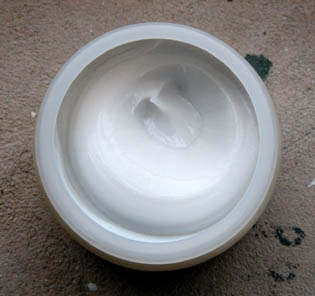

Dtp :
Renseignements pris, actuellement c'est
plutôt à la peinture glycérophtalique que tout le monde s'en prend
mais il faut s'attendre à ce que tous les produits dits synthétiques
soient attaqués tôt ou tard peut-être quelquefois plus à cause de
l'air du temps que pour des raisons scientifiques.
Selon le
Reptox du CSST canadien, aucune donnée ne permet de conclure à la
cancérogénicité et la mutagénéité pour l'homme du polyméthacrylate de
méthyle, qui est l'acrylique "modèle".
Il faudrait plutôt commencer par parler des adjuvants. Ceux qui sont
mis dans le pot (toluène ou
xylène, par exemple, pour certaines
acryliques) et ceux que l'on ajoute ensuite (médiums, diluants et bien
sûr pigments). C'est d'ailleurs le même problème avec le liant
glycérophtallique : on en dit pis que pendre mais personne ne semble
se préoccuper de la qualité des diluants employés. Or ce sont souvent
des white-spirits sales.
Concernant le procédé acrylique, le toluène ou le xylène sont destinés à maintenir le liant en
solution. Ce sont indéniablement des toxiques. Mais toutes les
acryliques ne contiennent pas ces produits et par ailleurs, n'importe
quel feu de bois émet du xylène, donc il ne faut être ni naïf ni
alarmiste. Conseiller un peu d'aération semble raisonnable, sauf
concentration extrême.
Si vous laissez sécher dans une salle
vingt toiles peintes avec une acryle contenant 5% de toluène, il y a
manifestement danger si vous ne ventilez pas.

Au-delà, quand on pose la question "le
liant acrylique lui-même est-il toxique ?", on se trouve devant une
telle variété de substances plutôt compliquées qu'une autre question
se pose immédiatement : "quelle acrylique ?"
Ensuite, il faudrait savoir de quel état
de l'acryle on parle : semi-liquide, sèche ou bien intégralement polymérisée ?
C'est essentiel parce que ce ne sont pas les mêmes substances. Un
exemple concret : le Reptox évoque un effet irritant des poussières du
produit. Or le semi-liquide n'émet pas de poussières. Cet
avertissement ne concerne donc que l'état solide et le document ne
spécifie pas lequel. Il reste beaucoup de travail devant nous pour
clarifier ces questions qui relèvent de la communication.
Plus généralement
Prouver qu'un polymère hydrocarboné est
toxique n'est de tout façon pas une chose facile. En général, ce sont
les régressions qui le sont (toxiques), sinon les poussières dans
certains cas. Les conditions de régression de l'acrylique ne sont pas
documentées comme alarmantes. Si on la brûle, oui, bien sûr, il se
produit des transformations. L'acryle se décompose à partir de 180°C
(pic à 300°C), redevenant son monomère. Puis, à 500°C, celui-ci se
dégrade. Un classique. Le monomère n'est d'ailleurs pas un poison
majeur et il est peu courant de faire brûler de la peinture.
L'acrylique, c'est-à-dire le polymère, se conserve a
minima sur des décennies. Elle est en principe stable, quoique un tel
jugement soit à nuancer étant donné la quantité de variétés
existantes. Quant aux poussières, que faudrait-il
craindre dans la mesure où une acrylique "moyenne" qui se
désagrège ne
farine pas et part presque toujours en plaques ?
Pour le moment on peut surtout attirer l'attention sur les adjuvants
parce que l'on connaît relativement bien leur toxicité et puis... ils
sont bien là, du moins souvent là.
La littérature américaine consacrée aux
techniques plastiques est souvent de très bonne qualité mais pourrait
parfois sembler à un Européen un peu alarmiste concernant les produits
dits synthétiques, souvent stigmatisés "tout d'un bloc". Faire une
distinction entre l'acryle proprement dite et ses éventuels adjuvants
semble plus pertinent.